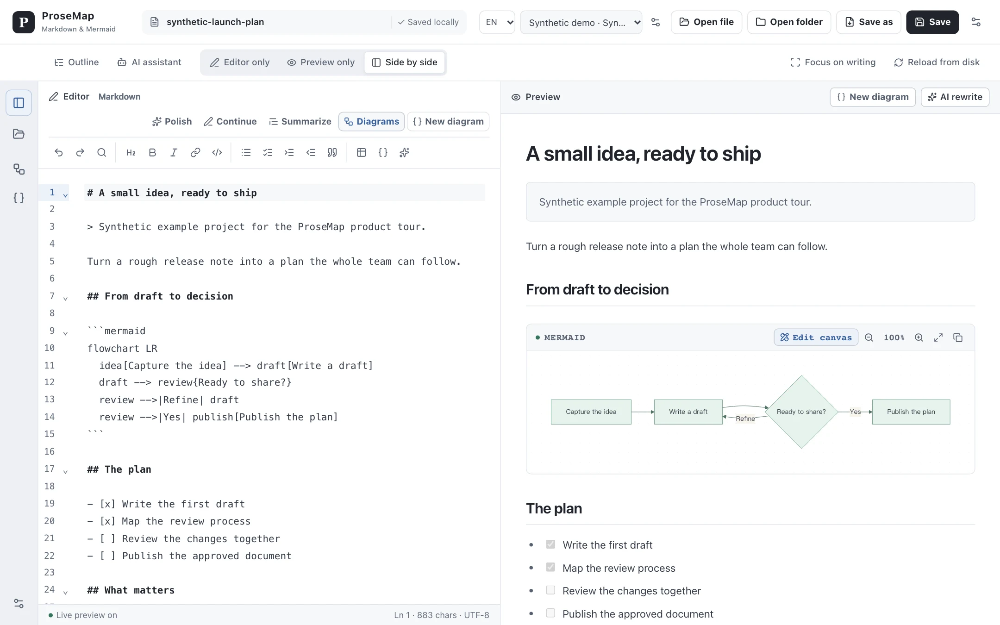
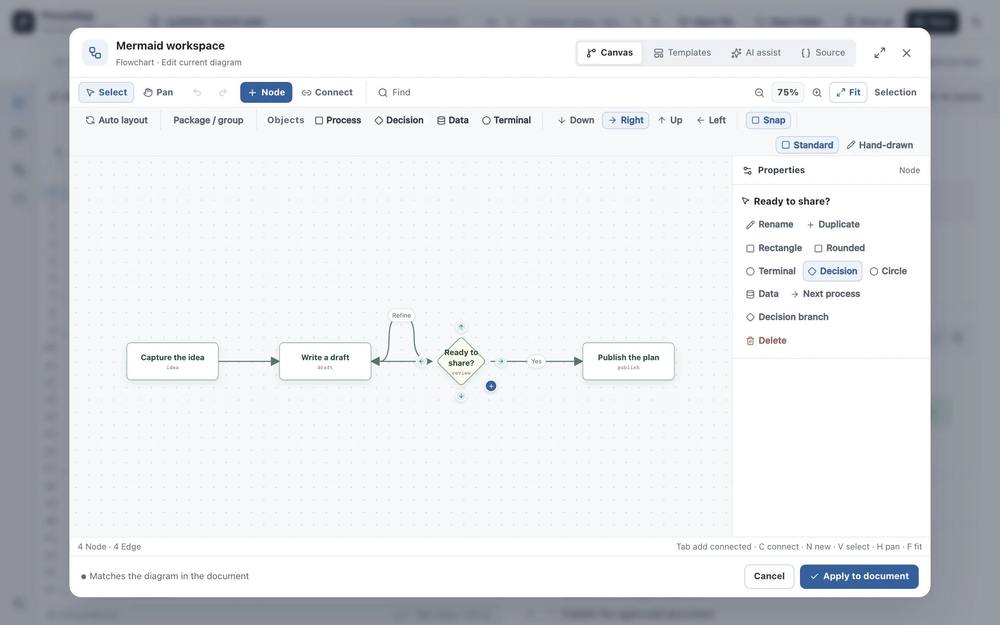
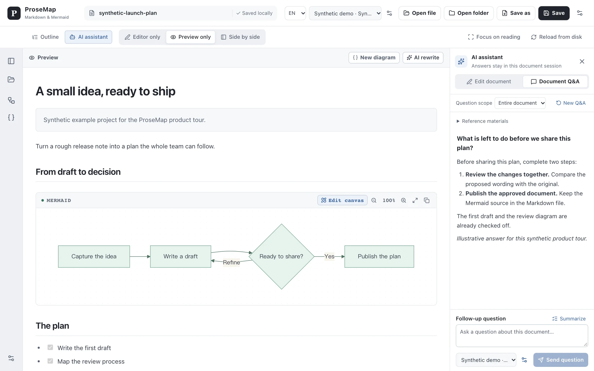
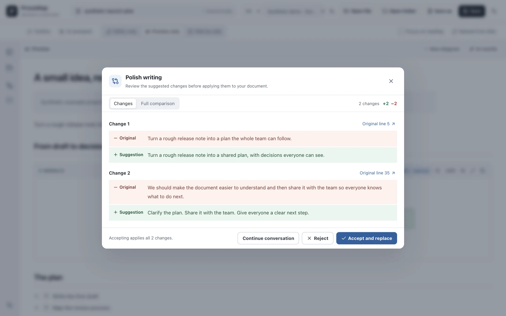

Write the thought.
See the whole picture.
A local-first Markdown & Mermaid desktop editor.
Write locally, then invite a coauthor into a shared draft.
v0.17.0 · Desktop preview · MIT licensed
One document. More ways to think.

Enlarge screenshotKeep your train of thought.
Write Markdown beside a live preview. Switch to focus mode when all you need is the next sentence.

Enlarge screenshotGive the idea a shape.
Move nodes, connect ideas, and edit properties on the Mermaid canvas. Keep the source right there with you.

Enlarge screenshotRead it. Then ask it.
Summarize a long document or ask about a selection. Keep asking follow-up questions as you read.

Enlarge screenshotMake every change a choice.
See the original and proposed passages together. Accept the complete suggestion, reject it, or keep the conversation going.
Actual v0.16.0 frontend. Synthetic example documents and AI replies; desktop file operations are simulated for these captures.
A diagram you can see.
A file you can keep.
Explain the architecture. Untangle a workflow. Map the next release. Move between the canvas and Mermaid source, then save both words and diagrams in the same Markdown file.
Markdown checklist
## The plan
- [x] Write the first draft
- [x] Map the review process
- [ ] Review the changes together
- [ ] Publish the approved documentThe flowchart in the same file

Flowcharts · Sequence · State · Class · ER · Mind maps · Gantt
A small, fictional release plan. Open it in ProseMap and make it yours.
A little AI help.
The final say is yours.
Get past the blank page, polish a paragraph, or ask for a clearer explanation. ProseMap keeps suggestions reviewable and your next decision close at hand.
- Bring your model.
- Save multiple OpenAI-compatible or Anthropic connections and switch as you work.
- Give it the right context.
- Choose up to 12 reference or source files from a local folder. Only selected files become reference context.
- Review before replacing.
- Compare changed passages, open the full comparison, then decide whether to apply the suggestion.
We should make the document easier to understand and then share it with the team so everyone knows what to do next.
Clarify the plan. Share it with the team. Give everyone a clear next step.
Your work belongs
in your folder.
Open a Markdown file. Browse a local project. Paste an image and keep it beside your document. The result is ordinary files you can move, version, and open elsewhere.
Read the file and AI guidemy-project/
├── launch-plan.md
└── images/
└── reference.png- Local Markdown editing and Mermaid rendering work offline.
- AI sends the chosen scope and reference content to your configured provider.
- Production model credentials use the operating system credential store.
Start with one good idea.
Open a note you already have, or try the example above. Your next README, architecture note, or project plan can start here.
Windows
Windows 10/11 · x64 · unsigned installers
Linux
Linux · x64 · preview packages
macOS
Apple Silicon and Intel · unnotarized preview · session-only model keys
This is a preview release. Native desktop acceptance remains incomplete; check the release notes for platform and verification limits.
Release notes & checksumsA few things worth knowing.
Do I need AI to use ProseMap?
No. Writing, local files, Markdown preview, and Mermaid rendering work without an AI connection. Connect a model when you want questions, suggestions, or AI diagram drafts.
Is ProseMap free?
The project is open source under the MIT License. You bring your own model connection; your model provider may charge for requests, including conversation compression.
What stays local, and what gets sent?
Your original files stay on your device. Confirming a share sends a copy of the title and Markdown to the selected collaboration server. When you invoke AI, the chosen document scope, selected references, instructions, and relevant conversation are sent to the provider you configured. Selecting a folder does not send the entire repository.
Can I use these files in other tools?
Yes. Documents are Markdown, diagrams use Mermaid source, and pasted images are saved with relative links. Canvas positions belong to the editing session; source-based previews use automatic layout.
How mature is this version?
v0.17.0 is a desktop preview. Browser checks and two macOS development clients verified shared editing with synthetic documents. Installed Windows and Linux collaboration, physical cross-network use, and live model quality remain unverified.